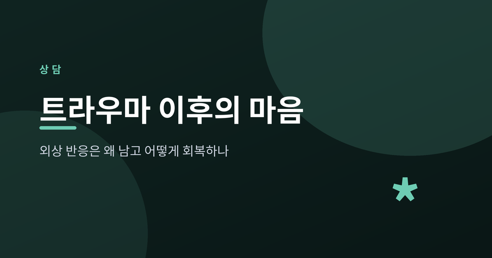
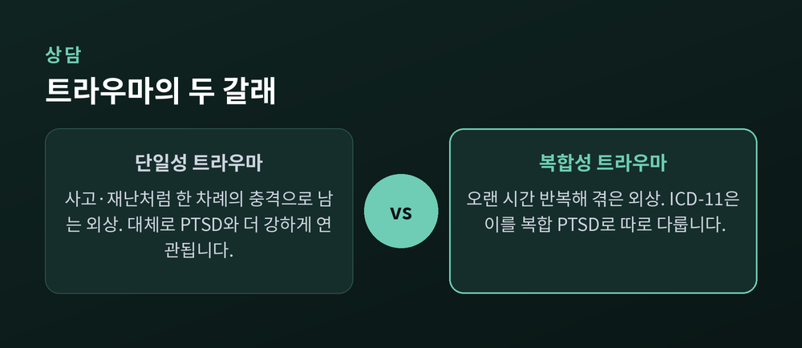
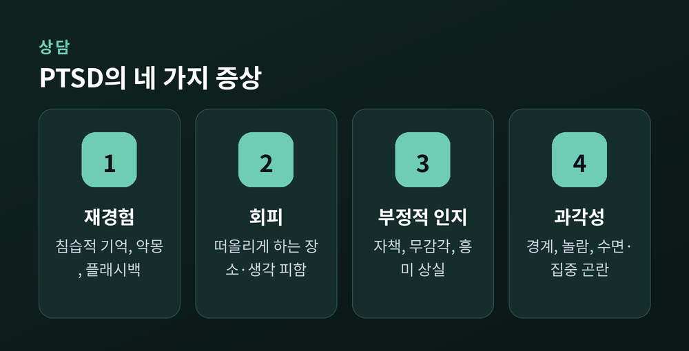
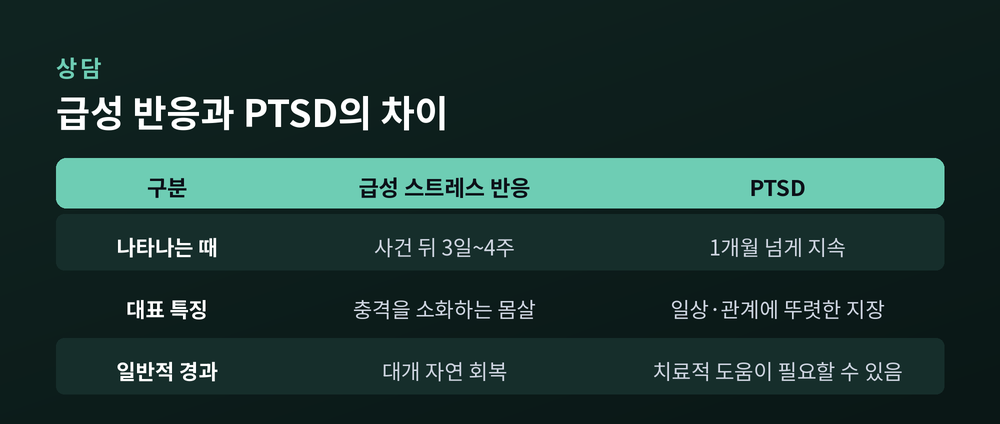
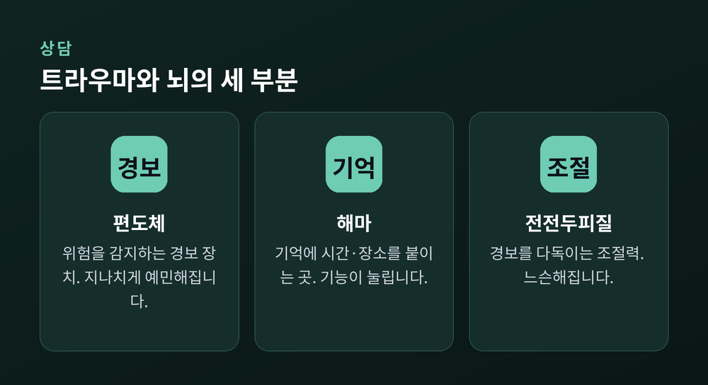
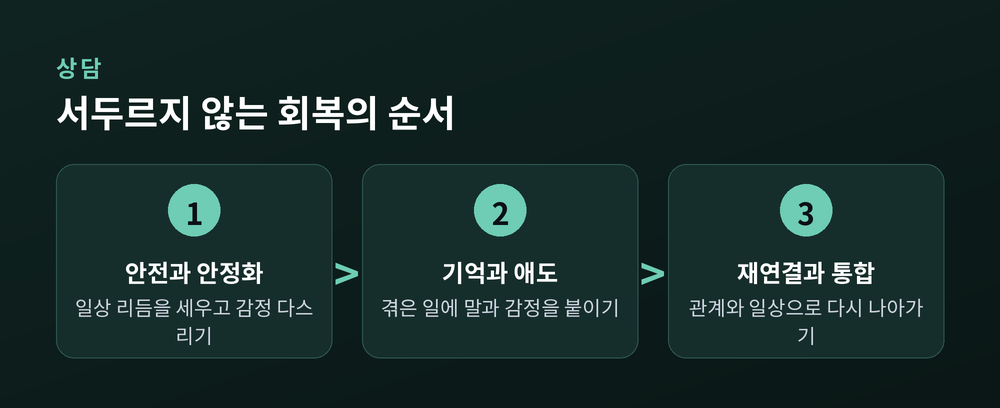

이번 글에서는 트라우마 이후의 마음을 정리해 보겠습니다. 외상 반응이 왜 오래 남는지, 급성 반응과 PTSD는 어떻게 다른지, 그리고 회복을 돕는 일반적인 길은 무엇인지까지 차분히 짚겠습니다. 특정 개인이나 사건이 아니라, 누구에게나 해당할 수 있는 마음의 원리에 관한 이야기입니다.
트라우마는 흔히 큰 사건 그 자체를 가리키는 말로 쓰입니다. 하지만 심리학에서 말하는 트라우마는 조금 다릅니다. 사건이 아니라, 그 사건이 한 사람의 대처 능력을 압도했는가가 기준입니다.
같은 일을 겪어도 어떤 사람에게는 상처로 남고, 어떤 사람에게는 그렇지 않습니다. 그래서 트라우마는 "무슨 일이 있었나"만큼이나 "그 사람이 그것을 어떻게 감당했나"의 문제입니다.
트라우마는 크게 두 갈래로 나눠 볼 수 있습니다. 하나는 사고나 재난처럼 한 차례의 충격으로 남는 단일성 트라우마입니다. 다른 하나는 오랜 시간 반복해서 겪은 복합성 트라우마입니다. 세계보건기구의 국제질병분류(ICD-11)는 후자를 복합 PTSD라는 별도의 이름으로 다룹니다.
다만 한 가지는 짚어 둘 필요가 있습니다. 반복해서 겪었다고 반드시 더 깊은 상처가 남는 것은 아닙니다. 취약한 상태에서는 단 한 번의 사건도 복합적인 상처가 될 수 있고, 든든한 지지 속에서는 오랜 어려움도 비교적 가볍게 지나갈 수 있습니다. 결국 사건의 종류와 그 사람의 상태·자원이 함께 작용합니다.

충격적인 일을 겪은 뒤 마음이 흔들리는 것은 이상한 일이 아닙니다. 잠이 오지 않고, 자꾸 그 장면이 떠오르고, 사소한 소리에도 놀랍니다. 이런 반응을 급성 스트레스 반응이라 부릅니다. 대개 사건 이후 사흘에서 한 달 사이에 나타나는 마음의 몸살입니다.
여기서 중요한 사실이 하나 있습니다. 대부분의 사람은 시간이 지나며 자연스럽게 회복합니다. 자연 회복의 상당 부분은 처음 두세 달 안에 집중되어 일어납니다. 즉 초기의 흔들림은 병이라기보다, 충격을 소화하려는 정상적인 과정에 가깝습니다.
문제는 이 반응이 한 달을 넘겨 계속되고, 일상과 관계와 일에 뚜렷한 지장을 줄 때입니다. 이 경우를 외상 후 스트레스 장애, 곧 PTSD라 부릅니다. PTSD의 증상은 크게 네 갈래로 정리됩니다.
첫째는 재경험입니다. 침습적인 기억, 악몽, 그리고 과거의 일이 지금 벌어지는 듯 생생하게 되살아나는 플래시백입니다. 둘째는 회피입니다. 그 일을 떠올리게 하는 장소·사람·생각을 애써 피합니다. 셋째는 인지와 기분의 부정적 변화입니다. 자신을 탓하거나 세상을 위험하게만 보고, 흥미와 감정이 무뎌집니다. 넷째는 과각성입니다. 늘 경계 태세에 있고, 쉽게 놀라며, 집중과 잠이 어렵습니다.
예전에는 이런 반응을 두고 마음이 약한 탓이라 여기기도 했습니다. 지금은 다르게 봅니다. 이것은 위험을 겪은 뇌가 스스로를 지키려다 과하게 켜진 상태입니다.

참고로 미국 성인의 경우 평생 한 번쯤 PTSD를 경험하는 비율은 약 6.8퍼센트로 알려져 있습니다. 드물지 않은 마음의 어려움인 셈입니다.

트라우마 반응이 오래 남는 데는 신경계의 사정이 있습니다. 어려운 용어를 잠깐 쉽게 풀어 보겠습니다.
위협을 만나면 몸은 즉시 대응 태세로 바뀝니다. 심장이 빨라지고 근육이 긴장합니다. 싸우거나 달아나기 위한 투쟁-도피 반응입니다. 이 스위치를 켜는 곳이 뇌 속의 편도체입니다. 편도체는 위험을 감지하는 경보 장치라고 생각하시면 됩니다.
또 하나 중요한 부위가 해마입니다. 해마는 기억에 시간과 장소라는 꼬리표를 붙이는 일을 합니다. "그건 작년의 일이고, 지금 여기는 안전하다"를 구분해 주는 것이 해마입니다.
트라우마를 겪으면 이 균형이 흔들립니다. 경보 장치인 편도체는 지나치게 예민해지고, 시간표를 붙여 주는 해마의 기능은 눌립니다. 그 결과 기억이 시간과 장소를 잃은 채 저장됩니다. 지난 일이 마치 지금 벌어지는 것처럼 되살아나는 이유가 여기에 있습니다. 플래시백은 마음이 약해서가 아니라, 기억이 제자리에 정리되지 못해 생기는 현상입니다.
여기에 더해, 평소 편도체를 위에서 다독이던 전전두피질의 조절력도 약해집니다. 경보는 크게 울리는데 그것을 눌러 줄 손이 느슨해지는 셈입니다.

정리하면 이렇습니다. 트라우마 반응이 남는 것은 의지의 문제가 아니라, 생존을 위해 설계된 뇌가 위협을 너무 성실히 기억한 결과입니다. 그 사실을 아는 것만으로도 자책을 조금은 내려놓을 수 있습니다.
회복에도 순서가 있습니다. 트라우마 치료에서 널리 쓰이는 3단계 모델이 그 지도를 보여 줍니다.
첫 단계는 안전과 안정화입니다. 상처를 곧바로 헤집지 않습니다. 먼저 몸과 마음의 안전을 확보하고, 무너진 일상의 리듬을 세우며, 감정을 다스릴 방법을 익힙니다. 이 토대 없이 기억부터 파고들면 오히려 힘겨워집니다.
두 번째 단계는 기억과 애도입니다. 안전이 확보된 뒤에야 비로소 겪은 일에 말과 감정을 붙이고, 그로 인해 잃은 것을 천천히 애도합니다.
세 번째 단계는 재연결과 통합입니다. 관계에 대한 신뢰를 회복하고, 배운 것을 삶에 녹여 다시 의미 있는 일상으로 나아갑니다.

전문적인 치료 방법도 여럿 있습니다. 지속노출치료, 인지처리치료, 외상초점 인지행동치료 등이 근거가 탄탄한 접근으로 꼽힙니다. 안구운동을 활용하는 EMDR도 널리 쓰입니다. 다만 어떤 방법이 맞는지는 사람마다 다릅니다. 반드시 훈련된 전문가와 함께 정하시길 권합니다.
일상에서 스스로 할 수 있는 돌봄도 회복의 큰 축입니다. 규칙적으로 먹고 자고, 술이나 약물에 기대지 않는 것. 산책이나 깊은 호흡으로 몸의 긴장을 푸는 것. 믿을 수 있는 사람에게 마음을 털어놓는 것. 특히 사회적 지지는 회복에서 가장 든든한 자원입니다. 사건을 반복해 다루는 뉴스나 영상은 잠시 멀리하는 편이 좋습니다.
마음이 크게 흔들릴 때 도움이 되는 작은 기술도 있습니다. 지금 이 순간의 감각으로 주의를 돌리는 그라운딩입니다. 눈에 보이는 것 다섯 가지, 들리는 소리, 발바닥이 닿은 바닥을 하나씩 확인해 봅니다. "나는 지금 이 방에 있고, 지금은 안전하다"는 신호를 뇌에 보내는 방법입니다.
한 가지 덧붙이자면, 회복은 상처를 지우는 일이 아닙니다. 흔들림을 견딜 수 있는 마음의 폭을 조금씩 넓혀 가는 과정에 가깝습니다. 이 폭이 좁아지면 작은 자극에도 쉽게 균형을 잃지만, 안정과 지지 속에서 그 폭은 다시 넉넉해집니다. 어떤 이들은 그 길을 지나며 관계와 삶의 우선순위를 새롭게 바라보기도 합니다.
정리하면 이렇습니다. 트라우마 이후의 반응은 고장이 아니라, 살아남기 위해 애쓴 마음의 흔적입니다. 대부분의 상처는 시간과 지지 속에서 옅어지고, 필요한 순간에는 전문적인 도움이 그 길을 앞당깁니다.
"회복은 없던 일로 만드는 것이 아니라, 그 일과 함께 다시 살아가는 힘을 되찾는 것."